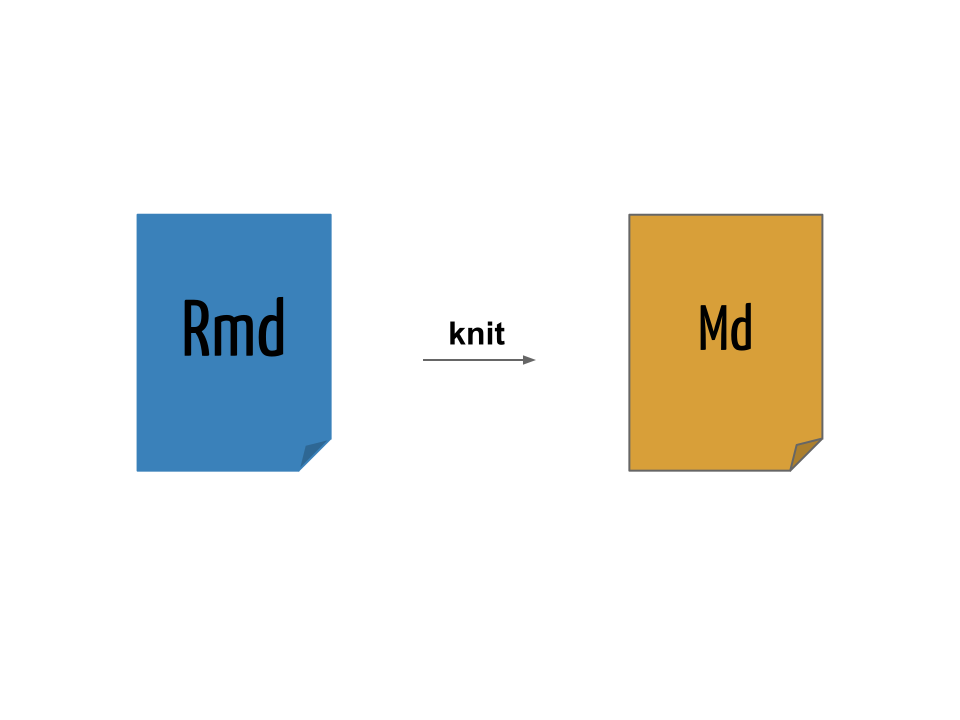

R Markdown
São Paulo R Users Group
IME/USP, 18 de setembro de 2015
http://www.meetup.com/pt/useR-SP/
Fernando de Pol Mayer Universidade Federal do Paraná
Lab. de Estatística e Geoinformação - LEG Departamento de Estatística
Outline
- Mostrar a ideia por trás do uso do R Markdown
- Mostrar possibilidades
- Material disponível:
- Apresentação: http://www.leg.ufpr.br/~fernandomayer/useR/Rmarkdown-rautu.html
- Código fonte: http://git.leg.ufpr.br/fernandomayer/Rmarkdown-rautu
Como a ciência funciona
- Replicação
- Muitas vezes difícil
- Reproducibilidade
- Mais fácil. O mínimo de qualquer pesquisa é ser reprodutível
- Elementos da reproducibilidade:
- Dados
- Código
- Documentação
- Distribuição
Pesquisa reprodutível
The source code is real
ESS Project
Pseudo-código para escrever um artigo ou relatório científico:
R source
Mudou alguma linha na base de dados? Esqueceu de algo? Volte para o item (1) e repita o processo (e boa sorte)!
Pseudo-código para escrever um artigo ou relatório científico reprodutível:
R source
Mudou alguma linha na base de dados? Esqueceu de algo? Altere o código e gere um novo documento.
- Dessa forma, um documento pode ser gerado dinamicamente a partir de um código-fonte.
- Da mesma forma que um software possui seu código-fonte, um documento dinâmico é o código-fonte de um relatório.
- É uma combinação de código de computador e as correspondentes narrativas descrevendo o resultado que o código está gerando (números, tabelas, figuras, ...).
- Quando compilamos o documento dinâmico, o código de computador é executado, e as saídas são apresentadas. Portanto obtemos um documento final que mistura código e texto.
- Como gerenciamos apenas o código-fonte do documento, ficamos livres de todas as etapas manuais mencionadas acima.
Literate Programming
Instead of imagining that our main task is to instruct a computer what to do, let us concentrate rather on explaining to humans what we want the computer to do.
Donald Knuth
O ideia básica por trás de documentos dinâmicos decorre diretamente do conceito de literate programming ("programação letrada"), um paradigma concebido por Donald Knuth em 1984.

|

|
- O conceito é o de misturar literatura (o texto em uma linguagem humana) com códigos de programação, tornando claro cada etapa de um programa e/ou análise
- Com um único código-fonte, podemos
- Produzir documentos para humanos (HTML, PDF, ...) ⇒ weave
- Produzir documentos para máquinas (código) ⇒ tangle
- Knuth criou um sistema chamado WEB para fazer essa mistura dos seus textos em TeX com a linguagem Pascal
- Atualmente muitos outros sistemas existem para misturar códigos com texto em várias linguagens
Literate Programming no R
Com a ascensão do R no início dos anos 2000, [Friedrich Leisch][] criou o [Sweave][] em 2002
- S + weave
- Permite "entrelaçar" textos do LaTeX com códigos do R
- Ainda é muito utilizado e já é distribuído como uma função do R dentro do pacote
utils
No final de 2011, [Yihui Xie][] criou o pacote [knitr][] com a proposta de ser mais flexível, fácil e preparado para a Web
knitr = Sweave + cacheSweave + pgfSweave + weaver + animation::saveLatex + R2HTML::RweaveHTML + highlight::HighlightWeaveLatex + 0.2 brew + 0.1 SweaveListingUtils + more
- knit + R
- Uma re-implementação mais moderna do Sweave
- Permite "entrelaçar" textos do LaTeX, HTML e Markdown com códigos do R
- Também permite misturar texto com códigos de outras linguagens: Python, awk, C++, shell.
- Adiciona muitas facilidades como
- Cache
- Decoração e formatação automática de códigos
- Geração de gráficos mais direta
O que é Markdown?
Markdown is a text-to-HTML conversion tool for web writers. Markdown allows you to write using an easy-to-read, easy-to-write plain text format, then convert it to structurally valid XHTML (or HTML).
John Gruber
- [Markdown][] é uma [linguagem de marcação] simples para escrever textos
- O texto pode ser lido sem nenhum processamento, ou seja, da maneira como está escrito
- Outras linguagens de marcação como HTML e LaTeX requerem um grande número de tags para formatar o texto, muitas vezes dificultando a leitura do código-fonte
- A proposta do Markdown é que o escritor se concentre no texto e não na formatação
- Pode ser convertido para vários outros formatos além de HTML
Sintaxe do Markdown
A sintaxe do Markdown é muito simples, e pode ser resumida da seguinte forma:
Cabeçalhos
# Título
## Sub-título
### Sub-sub-títuloItálico
*Este texto aparecerá em itálico.*Este texto aparecerá em itálico.
Negrito
**Este texto aparecerá em negrito.**Este texto aparecerá em negrito.
Listas não-ordenadas
- Primeiro item
- Segundo item
- Terceiro item- Primeiro item
- Segundo item
- Terceiro item
Listas ordenadas
1. Primeiro item
2. Segundo item
3. Terceiro item- Primeiro item
- Segundo item
- Terceiro item
Sub-listas
Utilize 4 espaços para criar uma sub-lista:
1. Primeiro item
- Um sub-item
- Outro sub-item
2. Segundo item
3. Terceiro item- Primeiro item
- Um sub-item
- Outro sub-item
- Segundo item
- Terceiro item
Links
Links para endereços Web podem ser inseridos com [texto](link):
O criador do conceito de "literate programming" foi
[Donald Knuth](https://en.wikipedia.org/wiki/Donald_Knuth).O criador do conceito de "literate programming" foi Donald Knuth.
Devemos instalar o pacote [knitr](http://yihui.name/knitr) para poder
usar o R Markdown.Devemos instalar o pacote knitr para poder usar o R Markdown.
Imagens
Para inserir uma imagem, a sintaxe é a mesma de inserir um link, mas com uma exclamação (!) na frente: .
O link para a imagem pode ser um enderço Web:

Ou um endereço local:

Parágrafo
Para criar parágrafos basta pular uma linha:
O criador do conceito de "literate programming" foi
[Donald Knuth](https://en.wikipedia.org/wiki/Donald_Knuth).
Devemos instalar o pacote [knitr](http://yihui.name/knitr) para poder
usar o R Markdown.O criador do conceito de "literate programming" foi Donald Knuth.
Devemos instalar o pacote knitr para poder usar o R Markdown.
Códigos
Para apresentar códigos na própria linha, colocamos o texto entre duas crases (`):
Para gerar números aleatórios de uma distribuição normal no R, use a
função `rnorm()`.Para gerar números aleatórios de uma distribuição normal no R, use a função rnorm().
Para apresentar blocos de código, coloque o texto entre três crases seguidas (```) no início e no final:
```
x <- rnorm(n = 10, mean = 100, sd = 5)
hist(x, main = "")
```x <- rnorm(n = 10, mean = 100, sd = 5)
hist(x, main = "")Note que esse código não será interpretado, ele apenas será mostrado no texto. Esse será o papel do R aqui!
Tabelas
Tabelas podem ser escritas da seguinte forma:
Caracter | Permissão
---------|----------
`r` | Permissão de leitura (*read*)
`w` | Permissão de escrita (*write*)
`x` | Permissão de execução (*execute*)
`-` | Permissão desabilitadaPara gerar o seguinte resultado:
| Caracter | Permissão |
|---|---|
r |
Permissão de leitura (read) |
w |
Permissão de escrita (write) |
x |
Permissão de execução (execute) |
- |
Permissão desabilitada |
Equações matemáticas
Equações matemáticas podem ser escritas em formato LaTeX. A página HTML resultante irá remderizar as equações através do MathJax.
Equações na própria linha podem ser inseridas entre $:
Um modelo de regressão linear simples: $Y = \beta_0 + \beta_1 x + \epsilon$.Um modelo de regressão linear simples: Y = β0 + β1x + ϵ.
Equações podem ser exibidas entre $$:
$$
f(x;\mu,\sigma^2) = \frac{1}{\sigma\sqrt{2\pi}}
e^{ -\frac{1}{2}\left(\frac{x-\mu}{\sigma}\right)^2 }
$$
$$
f(x;\mu,\sigma^2) = \frac{1}{\sigma\sqrt{2\pi}}
e^{ -\frac{1}{2}\left(\frac{x-\mu}{\sigma}\right)^2 }
$$
Escrevendo um documento em Markdown
Um documento Markdown possui a extensão .md (embora não seja a única possível).
Veja o arquivo de exemplo Exemplo1.md.
Para converter um documento Markdown em HTML é necessário um conversor.
O conversor padrão do Markdown é escrito em Perl, e pode ser integrado em diversas ferramentas, mas não é apropriado para usuários comuns.
Para testar a conversão do documento, copie e cole na página do Dingus.
Pandoc
O Pandoc é um conversor extremamente versátil, capaz de converter diversos formatos, incluindo Markdown para HTML.
Se o Pandoc estiver instalado no seu sistema (Linux) é possível converter o documento com
sh source
pandoc -f markdown -t html Exemplo1.md -o Exemplo1.htmlO pacote knitr possui a função pandoc() que é um wrapper para executar o programa pandoc no sistema.
R source
pandoc(input = "Exemplo1.md", format = "html")Em ambos os casos, o resultado pode ser visualizado ao abrir o arquivo Exemplo1.html no navegador.
Usando o knitr com Markdown
No exemplo anterior, escrevemos um documento em Markdown (.md) e inserimos códigos do R, que são apenas apresentados no documento final.
Agora vamos usar o knitr a nosso favor, fazedo com que ele interprete e retorne resultados dos códigos que inserimos.
Para isso renomeie a extensão do arquivo de .md para .Rmd.
Os blocos de códigos (ou chunks) agora devem conter uma marcação especial para indicar que devem ser interpretados pelo R. Para isso, colocamos {r} no início de cada bloco, que agora ficam
```{r}
x <- rnorm(n = 10, mean = 100, sd = 5)
hist(x, main = "")
```Usando o mesmo exemplo anterior, vamos renomear o arquivo Exemplo1.md para Exemplo1-knitr.Rmd e incluir a marção {r}.
Também é possível colocar códigos do R para serem renderizados na própria linha com `r `, por exemplo, `r 2+2` gera o resultado 4 no documento.
Veja o arquivo Exemplo1-knitr.Rmd. Agora usamos o knitr, através da função knit() para compilar o documento .Rmd em um documento com sintaxe Markdown .md
R source
knit("Exemplo1-knitr.Rmd")|  |
O resultado da compilação pode ser vista no arquivo Exemplo1-knitr.md.
Agora temos um documento em Markdown com os códigos do R avaliados. Mas ainda precisamos processar esse arquivo para gerar o arquivo .html através do Pandoc
R source
pandoc(input = "Exemplo1-knitr.md", format = "html")que gera o arquivo Exemplo1-knitr.html que poder ser visualizado no navegador.
Usando o R Markdown
Para facilitar a conversão de arquivos .Rmd em .html, usamos o pacote [rmarkdown][], através da função render().
A função render() é uma wrapper que internamente chama a knitr::knit() e posteriormente converte o documento para .html usando o Pandoc.
A vantagem de usar a rmarkdown::render() é que ela possui uma série de opções que facilitam a conversão de documentos além de já renderizar páginas HTML mais amigáveis (atrvés de arquivos CSS).
Para usar esse função você precisa:
- Instalar o pacote
rmarkdowncominstall.packages("rmarkdown") - Instalar o Pandoc no seu sistema
No RStudio, esse pacote já vem instalado, assim como uma versão embutida do Pandoc.
Usando o exemplo anterior, vamos compilar o arquivo Exemplo1-knitr.Rmd com
R source
## Carrega o pacote
library(rmarkdown)
render("Exemplo1-knitr.Rmd")

|
E o resultado pode ser visto no arquivo Exemplo1-knitr.html.
No RStudio, esse processo todo pode ser feito pelo botão Knit.
Convertendo R Markdown para outros formatos
Por padrão, a função render() gera um arquivo .html mas existem outros formatos finais possíveis graças ao Pandoc.
A chamada anterior é equivalente a
R source
render("Exemplo1-knitr.Rmd", output_format = "html_document")O pacote rmarkdown possui uma sério de formatos de saída, que posuem os sufixos _document para documentos, e _presentation para apresentações (slides). Alguns deles:
- Documentos:
html_documentpdf_documentword_document
- Apresentações:
ioslides_presentationslidy_presentationbeamer_presentation
Podemos converter um documento em R Markdown para PDF com
R source
render("Exemplo1-knitr.Rmd", output_format = "pdf_document")O resultado é o arquivo Exemplo1-knitr.pdf. A função render() usa o Pandoc para converter Markdown para LaTeX, e depois para PDF.
Um documento do Word pode ser gerado com
R source
render("Exemplo1-knitr.Rmd", output_format = "word_document")Para gerar Exemplo1-knitr.docx.
Apresentações em slides HTML podem ser geradas em diversos formatos, um deles é o ioslides
R source
render("Exemplo1-knitr.Rmd", output_format = "ioslides_presentation",
output_file = "Exemplo1-knitr-ioslides.html")Veja o resultado em Exemplo1-knitr-ioslides.html.
Apresentações em beamer
R source
render("Exemplo1-knitr.Rmd", output_format = "beamer_presentation",
output_file = "Exemplo1-knitr-beamer.pdf")Com resultado no arquivo Exemplo1-knitr-beamer.pdf.
Metadados
Uma opção interessante ao utilizar o Pandoc é incluir metados no formato [YAML][].
Os metadados em YAML são escritos em formato de lista aninhada, e o Pandoc usa essas informações para incluir, por exemplo, título, autor, e data em um documento.
A opção mais importante para o rmarkdown é o campo output, que permite especificar o formato desejado de saída, o mesmo especificado no argumento output_format = da função render().
Os metadados em YAML são colocados sempre no início de um documento, e são delimitados por ---. Exemplo típico:
---
title: "Meu documento em R Markdown"
author: "Fernando Mayer"
date: 18 de setembro, 2015
output: html_document
---Veja o arquivo Exemplo1-yaml.Rmd.
Com isso, não é mais necessário especificar o argumento output_format = na chamada da função render().
Também é possível incluir vários formatos ao mesmo tempo, por exemplo
---
title: "Meu documento em R Markdown"
author: "Fernando Mayer"
date: 18 de setembro, 2015
output:
html_document: default
pdf_document: default
---E compilar todos eles ao mesmo tempo com
R source
render("Exemplo1-yaml.Rmd", output_format = "all")Veja Exemplo1-yaml.html, e Exemplo1-yaml.pdf.
Opções do knitr
Todas as opções do knitr para controlar a saída dos resultados de códigos do R são válidas para o R Markdown.
- Para afetar um único chunk, coloque as opções individualmente
```{r, opt1=val1, opt2=val2} # código ``` - Para afetar todos os chunks de um documento, use a função
knitr::opts_chunk$set():```{r, echo=FALSE} knitr::opts_chunk$set(opt1 = val1, opt2 = val2 ) ```
As opções mais importantes são
eval = FALSEpara não avaliar o código, apenas mostrarecho = FALSEpara não mostrar o código, apenas as saídasresults = "hide"para não mostrar as saídasresults = "asis"para que o resultado seja tratado como texto literal em Markdown. Por exemplo, para gerar uma tabela a partir de um objeto do R, podemos usar a funçãoknitr::kable()```{r, results="asis"} kable(head(iris)) ```
| Sepal.Length | Sepal.Width | Petal.Length | Petal.Width | Species |
|---|---|---|---|---|
| 5.1 | 3.5 | 1.4 | 0.2 | setosa |
| 4.9 | 3.0 | 1.4 | 0.2 | setosa |
| 4.7 | 3.2 | 1.3 | 0.2 | setosa |
| 4.6 | 3.1 | 1.5 | 0.2 | setosa |
| 5.0 | 3.6 | 1.4 | 0.2 | setosa |
| 5.4 | 3.9 | 1.7 | 0.4 | setosa |
warning = FALSEemessage = FALSEpara suprimir as mensagens de avisofig.width = 5andfig.height = 5para alterar o tamanho dos gráficos gerados pelo R (em polegadas)cache = TRUEpara armazenar os resultados
A lista completa de opções está em http://yihui.name/knitr/options.
Um exemplo mais interessante
Para um exemplo mais completo veja o arquivo Exemplo2.Rmd.
Note que nos metadados YAML temos mais opções para cada formato de saída. Para compilar esse documento, podemos usar
R source
render("Exemplo2.Rmd", output_format = "all")Para gerar os arquivos Exemplo2.html e Exemplo2.pdf.